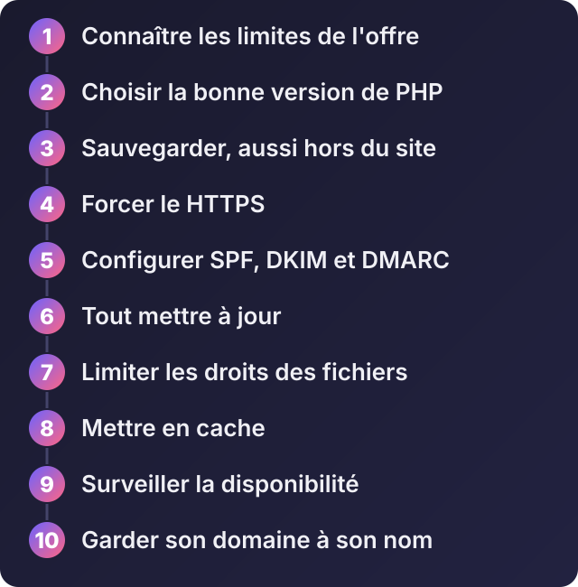

Mieux gérer son hébergement mutualisé : dix bonnes pratiques qui évitent les ennuis
Écouter cet article · environ 6 min
Un hébergement mutualisé est simple à prendre en main : on vous donne un panneau (souvent cPanel), vous y déposez votre site, et c'est en ligne. Mais simple ne veut pas dire sans entretien. Beaucoup de sites tombent en panne, sont piratés ou perdent leurs e-mails pour des raisons qu'on aurait évitées avec dix habitudes. Les voici.

1. Connaître les limites de votre offre
« Illimité » ne l'est jamais vraiment. Dans le panneau, regardez ce que votre offre prévoit : l'espace disque, le nombre de fichiers (les « inodes »), la mémoire et le processeur accordés, le nombre de processus simultanés. Quand un site dépasse ces limites, il devient lent ou affiche des erreurs. Consultez ces compteurs de temps en temps.
2. Choisir la bonne version de PHP
Si votre site tourne sous PHP, choisissez dans le panneau (souvent « Sélectionner la version PHP ») une version récente et encore maintenue. Une vieille version ne reçoit plus de correctifs de sécurité et ralentit votre site. Avant de changer, sauvegardez et testez : certains vieux plugins ou scripts ne suivent pas.
3. Sauvegarder, aussi hors de l'hébergement
Beaucoup d'hébergeurs font des sauvegardes automatiques, mais elles sont chez eux, et leur conservation varie. Prenez l'habitude de télécharger une copie complète (fichiers et base de données) sur votre ordinateur ou dans un autre service, au moins une fois par mois, et avant toute modification importante. Et essayez de restaurer une fois : c'est la seule façon d'être sûr que ça marche.
4. Forcer le HTTPS
Activez le certificat gratuit proposé par l'hébergeur (souvent « AutoSSL » ou « Let's Encrypt »), puis redirigez tout le trafic vers HTTPS. Sur un serveur Apache, dans le fichier .htaccess à la racine du site :
RewriteEngine On
RewriteCond %{HTTPS} off
RewriteRule ^(.*)$ https://%{HTTP_HOST}/$1 [R=301,L]5. Configurer SPF, DKIM et DMARC pour vos e-mails
Si vous avez des adresses professionnelles sur votre domaine, ces trois réglages évitent que vos messages finissent dans les courriers indésirables, ou qu'on envoie de faux messages en votre nom.
- SPF indique qui a le droit d'envoyer des messages au nom de votre domaine.
- DKIM ajoute une signature qui prouve que le message n'a pas été modifié.
- DMARC dit aux boîtes de réception quoi faire quand les deux premiers échouent.
Ce sont des enregistrements à ajouter dans la zone DNS de votre domaine. Votre hébergeur indique en général les valeurs à saisir. Vous pouvez vérifier le résultat avec MXToolbox.
6. Tout mettre à jour
Si vous utilisez WordPress ou un autre système de gestion de contenu : mettez à jour le cœur, les thèmes et les extensions. La majorité des sites piratés le sont par une extension oubliée. Supprimez les extensions et les thèmes que vous n'utilisez plus, et téléchargez-les uniquement depuis leurs sources officielles.
7. Limiter les droits des fichiers
Chaque fichier a des droits d'accès. Une règle courante : 755 pour les dossiers et 644 pour les fichiers. Ne laissez jamais un dossier en 777 : cela donne le droit d'écrire à n'importe qui. Protégez aussi les fichiers sensibles (fichiers de configuration, sauvegardes) et ne laissez pas traîner d'archives du site dans un dossier public.
Pensez aussi aux mots de passe : un mot de passe long et unique pour le panneau, pour la base de données et pour chaque adresse e-mail, avec la double vérification si le panneau la propose.
8. Mettre en cache
Le cache fait gagner beaucoup de vitesse. Si votre hébergeur utilise LiteSpeed, une extension de cache dédiée est souvent disponible pour WordPress. Vous pouvez aussi placer Cloudflare, qui a une offre gratuite, devant votre site. Compressez vos images avant de les mettre en ligne : c'est le gain le plus facile.
9. Surveiller la disponibilité
Ne comptez pas sur vos clients pour vous dire que le site est en panne. Un service de surveillance comme UptimeRobot, qui propose une offre gratuite (vérifiez ses conditions actuelles), contrôle votre site à intervalles réguliers et vous prévient par e-mail ou message. Pensez aussi à regarder de temps en temps le journal des erreurs dans le panneau : il révèle des problèmes avant qu'ils ne se voient.
10. Garder son nom de domaine à son nom
Le nom de domaine est votre actif le plus important. Vérifiez qu'il est enregistré à votre nom, avec une adresse e-mail de contact que vous lisez, avec le renouvellement automatique activé, et idéalement chez un gestionnaire distinct de l'hébergeur : si vous changez d'hébergement, vous gardez la main. Avant une migration, baissez la durée de mise en cache (TTL) de vos enregistrements DNS pour que le changement s'applique vite.
Et les tâches planifiées ?
Pour qu'une action se répète toute seule (envoyer des rappels, nettoyer des fichiers, lancer le planificateur de Laravel), utilisez les tâches cron du panneau. Pour Laravel, par exemple, la tâche consiste à lancer chaque minute la commande de planification du projet.
Quand quitter le mutualisé
Pensez à un VPS si votre site est régulièrement lent, si vous atteignez les limites de l'offre, si vous avez besoin de Node.js, de Python ou de logiciels que l'hébergeur ne permet pas, ou si vous hébergez plusieurs projets importants. On en parle dans l'article sur le choix entre mutualisé et VPS.
Besoin d'un audit de votre hébergement, d'une migration, ou de mettre en place sauvegardes et surveillance ? Écrivez-moi sur WhatsApp avec l'adresse de votre site : je regarde ce qui est à améliorer et je vous dis ce qui est vraiment utile.